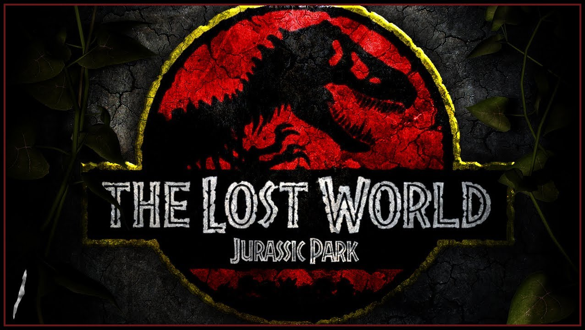
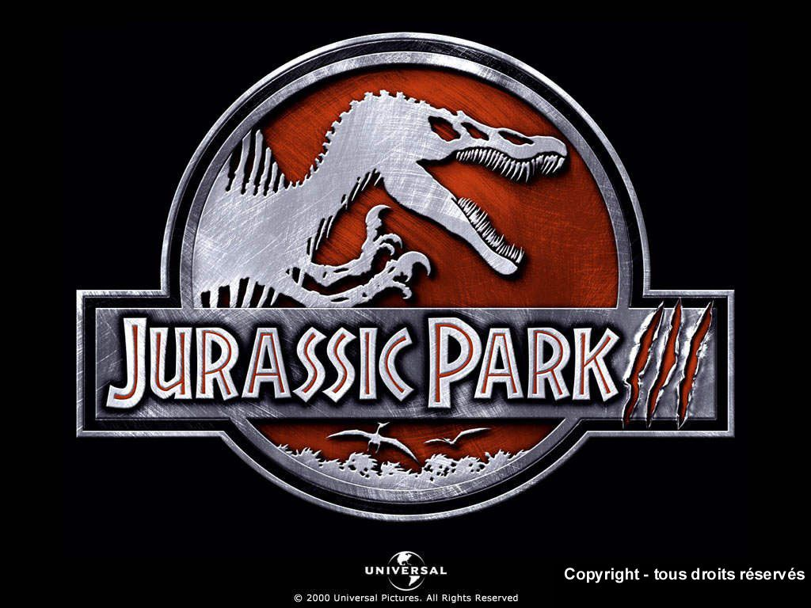

Mi nombre: Juan Ignacio Machdado
Edad: 17
Nacimiento: 18/05/2005
Mi pagina va a tratar de una pelicula
El multimillonario John Hammond hace realidad su, sueño de clonar dinosaurios del Jurásico y crear con ellos un parque temático en una isla. antes de abrir el parque al público general, Hammond invita a una pareja de científicos y a un matemático para que comprueben la viabilidad del proyecto. Sin embargo, el sistema de seguridad falla y los dinosaurios se escapan.

velociraptor
t-rex
triceratops
stegosaurus
La trama está ambientada cuatro años después de los sucesos del filme original y se desarrolla en la ficticia isla Sorna, ubicada en el Pacífico frente a Costa Rica, donde los dinosaurios clonados creados por la empresa InGen de Hammond vagan en libertad en su propio ecosistema. Hammond tiene noticia de que su sobrino, que se ha hecho cargo de InGen, quiere capturar a los animales y trasladarlos al continente para exhibirlos. Por ello, decide enviar una expedición secreta liderada por Malcolm que llegue a la isla antes que el equipo de su sobrino. Ambos equipos chocarán en medio de un lugar extremadamente peligroso y deberán intentar sobrevivir bajo el acecho de los temibles animales prehistóricos.
gallimimus
pteranodon
parasaurolophus
pachycephalosaurus
Han pasado 4 años desde el incidente de San Diego y también 8 años del incidente de la Isla Nublar,4 debido a esto las personas de todo el mundo tienen conocimiento de los animales extintos clonados que habitan en Isla Sorna. Como medida de prevención Sorna es considerada ahora zona restringida y está constantemente vigilada por el Servicio de Vigilancia Aérea de Costa Rica, para evitar que alguien se acerque. los visitantes de esta isla son, alan grant,erik,ben,ellie sattler
ankylosaurus
brachiosaurus
ceratosaurus
spinosaurus